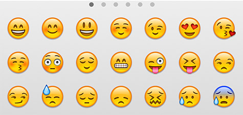
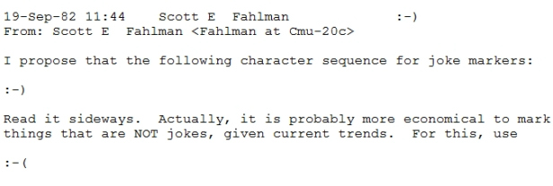

This presentation is on the history of the development of the emoji.
Emoticons and emojis are used to express human emotion and tonality through technology despite lack of face to face interaction.
Emoticons were first invented in 1982 by professor Scott Fahlman of Carnegie Mellon University. He wanted to created what he dubbed a “joke marker” and implemented the key combination of a colon for eyes, dash for nose and closing parenthesis for mouth viewed sideways to form :) (the first iteration of a smiley)
 back